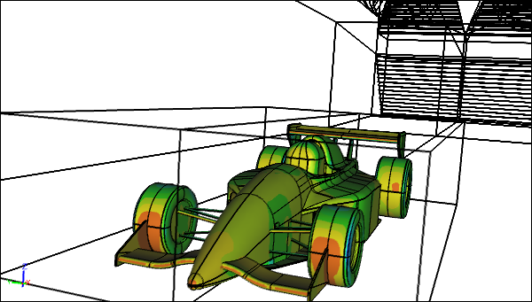

Virtual Wind Tunnel and Free Air CFD Comparison Part 2/2
Welcome to the concluding episode of my two-part project to compare results between the virtual wind tunnel and free air using a series of Computational Fluid Dynamics (CFD) simulations. Recall that the previous post outlined the free air tests and expectations for the comparison. Here I present the results and conclusions.
CFD Simulation of a Racecar in a Wind TunnelPressure contours on the racecar
Tests
I ran three CFD simulations in free air to compare with the wind tunnel results:
- 40% scale model in free air matching the wind tunnel conditions, Re = 3x106, U = 29 m/s
- Full size model in free air with matching Reynolds number to wind tunnel, Re = 3x106, U = 12 m/s
- Full size model in free air with matching velocity to wind tunnel, Re = 7.5x106, U = 29 m/s
Results
CFD Simulation of a 40% Scale Racecar in Free AirPressure contours on the racecar
The reference area for the drag and lift coefficients was half the area of the plane that fits the maximum height and width of the racecar.
Drag of Racecar and Wheels
Drag Coefficient for Racecar and Wheels
Percentage Difference of Drag Coefficient for Racecar and WheelsRelative to wind tunnel drag coefficient
All the drag coefficient values are within 5% to 6.5% of the wind tunnel (WT) value. As expected there is very little difference in drag coefficients between the free air results for the 40% model and the full size model with matching Reynolds number.
The fact that the drag coefficient for case 3, with a higher Reynolds number, is close to that of case 2 means that the air flow around the racecar is not particularly sensitive to Reynolds number, at least for drag. This bodes well for using the wind tunnel to guide the full size aerodynamic racecar design, however, before we can make that judgement we need to examine the lift coefficients.
Drag of Racecar Only
Drag Coefficient for Racecar (Excluding Wheels)
Percentage Difference of Drag Coefficient for Racecar (Excluding Wheels)Relative to wind tunnel drag coefficient
Excluding the drag from the wheels to focus on the racecar shows that the wheels account for approximately 50% of the overall drag for all cases.
Also we can see that the drag coefficients for the free air cases with matching Reynolds numbers are reasonably close to the equivalent value in the wind tunnel when the wheel drag is excluded. Case 3, with a higher Reynolds number, is the furthest away from the wind tunnel drag coefficient with a difference of 12.2%.
Lift of Racecar and Wheels
Lift Coefficient for Racecar and Wheels
Percentage Difference of Lift Coefficient for Racecar and WheelsRelative to wind tunnel lift coefficient
There are relatively large discrepancies between the wind tunnel lift coefficient (negative values indicate downforce) and the equivalent values for the free air cases, i.e., 17.8% to 23.2%. This indicates that the wind tunnel has a larger effect on the lift than it does on the drag.
As expected there is very little difference in lift coefficient between the free air results for the 40% model and the full size model with matching Reynolds number. Also the relatively small variations in lift coefficients between the full size free air cases confirms that this configuration is not particularly sensitive to Reynolds number.
Lift of Racecar Only
 Racecar Lift Coefficient (Excluding Wheels)
Racecar Lift Coefficient (Excluding Wheels)
Percentage Difference of Lift Coefficient for Racecar (Excluding Wheels)Relative to wind tunnel lift coefficient
Excluding the lift from the wheels to focus on the racecar shows that the wheels reduce the effective downforce by approximately 50%.
Also we can see that the lift coefficients for the free air cases are reasonably close to the equivalent value in the wind tunnel when the wheel lift is excluded. Interestingly case 3, with a higher Reynolds number, is the closest to the wind tunnel lift coefficient with a difference of only 4.8%.
Conclusions
Clearly there are differences between the free air cases and the wind tunnel results as shown by the drag and lift comparisons. To get better agreement between the wind tunnel and free air experiments there are a variety of options to consider.
In actual wind tunnels the boundary layer that forms upstream of the rolling road is often removed by suction, which then better mimics the actual movement of the racecar close to the ground. Also many wind tunnels with rolling roads isolate the aerodynamic forces acting on the wheels by not directly mounting them on the racecar. Boundary layer suction and isolated wheel mounts are employed by the physical wind tunnel that formed the basis for this virtual wind tunnel study. Also wind tunnel wall corrections are applied to wind tunnel results to compensate for the proximity of the walls relative to the test model.
The primary consideration for racecar success is downforce. Isolating the downforce (lift) on the racecar from the wheels, as presented in the "Lift of Racecar Only" Results section, shows that the wind tunnel can produce reasonable data to guide the aerodynamic design of racecars, even without matching the Reynolds number. This is not lost on leading motorsport teams that make extensive use of wind tunnels to assess and optimize their racecars.
Feedback
Questions? Ideas? Problems?

Recent blog posts
- CFD Simulates Distant Past
- Background on the Caedium v6.0 Release
- Long-Necked Dinosaurs Succumb To CFD
- CFD Provides Insight Into Mystery Fossils
- Wind Turbine Design According to Insects
- Runners Discover Drafting
- Wind Tunnel and CFD Reveal Best Cycling Tuck
- Active Aerodynamics on the Lamborghini Huracán Performante
- Fluidic Logic
- Stonehenge Vortex Revealed as April Fools' Day Distortion Field
 Get our Blog feed
Get our Blog feed
Comments
Areo simulation of a outlaw winged sprint car
Do you know if anyone has done a wind tunnel breakdown simulation of an outlaw winged sprint car the same as you have done of formula car.
https://www.cgtrader.com/3d-models/car/racing/3d-model-of-a-sprint-car-b...
https://www.youtube.com/watch?v=Idq1tiGnE2c